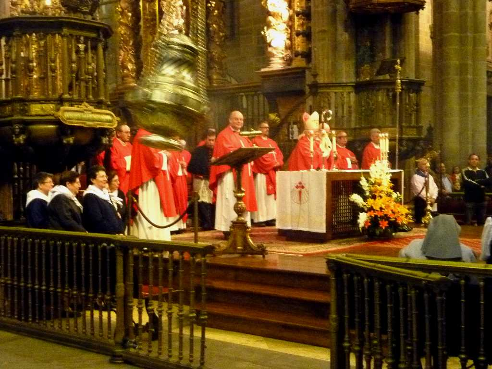
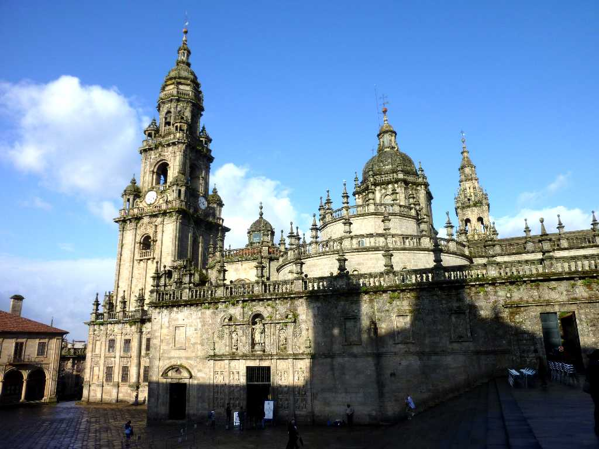
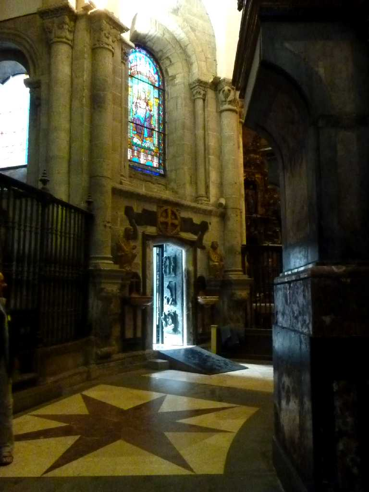
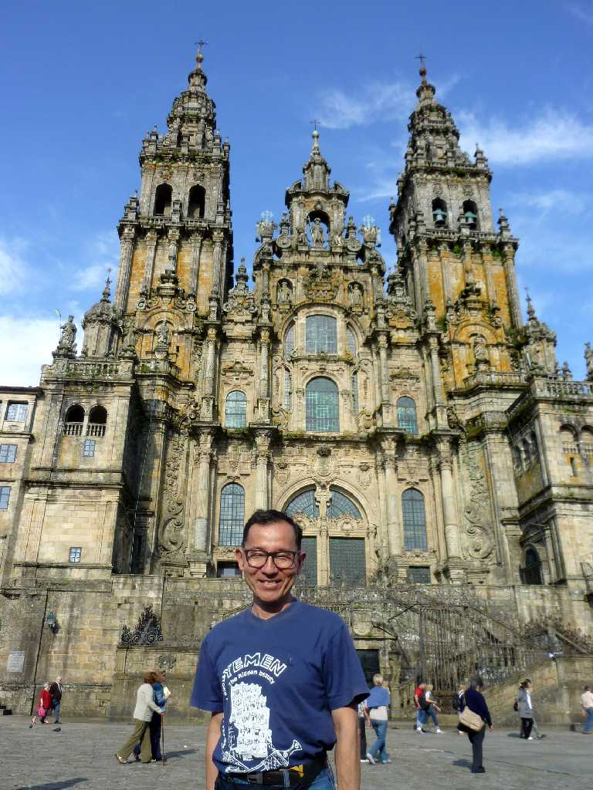

May 25 2010 Mass Catedral Santiago de Compostela


２時間弱のミサの最後の儀式 香を炊き聖堂内で香炉を大きく振るのは巡礼の人たちの匂いを消すため始められたが今は儀式となっている

Puerta Santa Santiago de Compostela


早朝の聖ヤコブの聖なる門 ２０１０年７月２５日は日曜日でヤコブの聖年となり聖なる門が開けられ通り抜けると罪が清められる 早朝で直ぐに通れたが見学後戻ると大行列が出来ていた

Inside Puerta Santa
聖ヤコブの墓があるサンティアゴデコンポステラはエルサレムやバチカンに並ぶキリスト教カトリックの聖地

May 24 2010 Catedral Santiago de Compostela